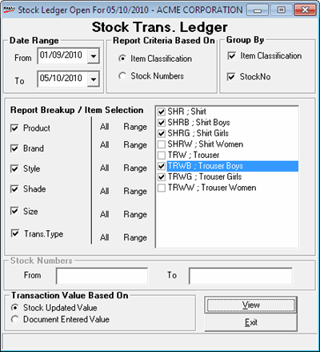

The Stock Transaction Ledger report lists opening balance, closing balance, entire transaction information date-wise and document-wise, based on the selection of items attributes or stock number criteria for the selected period. It helps in tracking an individual item’s stock history for audit verification. It allows you to select a range of stock numbers when reporting is based on stock number.
How to reach: Reports > Stock > Transaction Ledger
The Stock Ledger window is displayed.

Date Range: By default, the From and To dates are the current Shoper date. You can enter any date range but the To date cannot be greater than the Shoper date.
Report Criteria Based On: Select Item Classification or Stock Numbers based on which the report needs to be generated. If you select Item Classification, specify the report breakup or item selection, otherwise, specify the stock numbers.
Group By:Select Item classification and/ or Stock No to group the lines in the report accordingly.
Report Breakup/ Item Selection: Select Product, Brand, Style, Shade and/ or Size to select the items. For the selected classifications, choose All or Range to identify the values to be included. If you have selected Range, choose the values from the corresponding list.
Select Trans. Type, if you want to generate the report for specified transaction types. Choose All or Range. If you have selected Range, choose the required transaction types from the list.
Stock Numbers: Enter stock numbers in From and To to generate the report for only the stock numbers falling in this list. This is enabled only if you have chosen that report criteria is based on stock numbers.
Transaction Value Based On: Select Stock Updated Value or Document Entered Value to specify which value should be displayed in the report.